“¿Quién soy yo?” es una pregunta que me hago yo todos los días. Soy David y soy
diseñador, porque cada día, me levanto y me las ingenio para crear cosas nuevas, atrevidas y
diferentes en una empresa como Media Markt, donde soy visual merchandiser y diseñador gráfico.
Pero también soy cámara, grabando clases en Mindway para que los alumnos online
adquieran los mejores conocimientos sobre materias tan novedosas como diseño de interiores, wedding
planner o event designer. Hasta he sido presentador de TV y radio.
Normalmente soy inquieto, preguntón y disciplinado. Siempre me ha gustado aprender y
tener un montón de conocimientos sobre un montón de temas distintos, estén o no relacionados con mi
profesión o mis estudios. El saber no ocupa lugar, y cuanto más sepas, mayor conocimiento tendrás
sobre tu mundo. Por eso ahora soy diseñador de UX y UI gracias a Ironhack.
También soy melómano, trabajé en la radio durante un tiempo y la música es una de mis
pasiones. Soy algo desordenado, pero siempre encuentro el orden. Y soy persona, que se supera cada
día y quiere crecer para convertirse cada día un poquito mejor.


 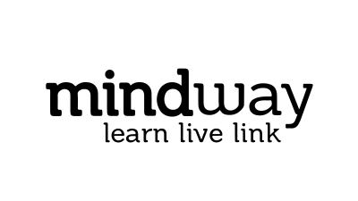
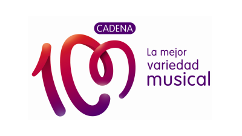
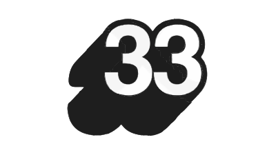
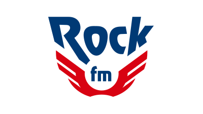
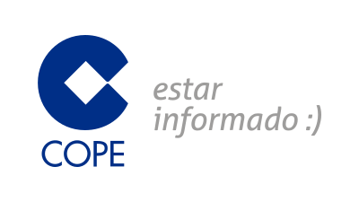
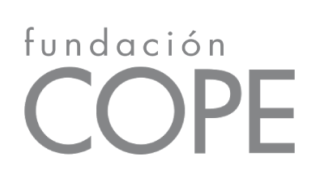
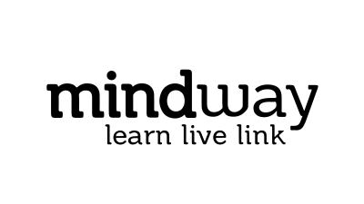
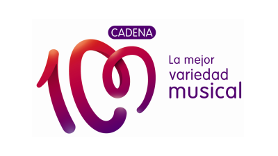
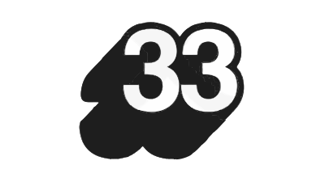
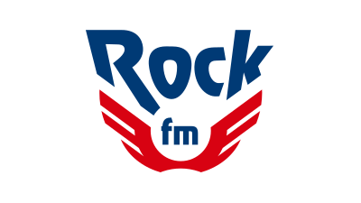
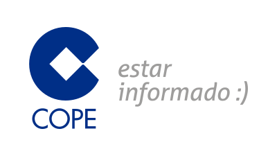
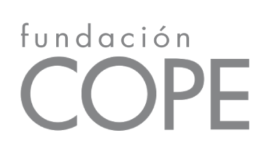